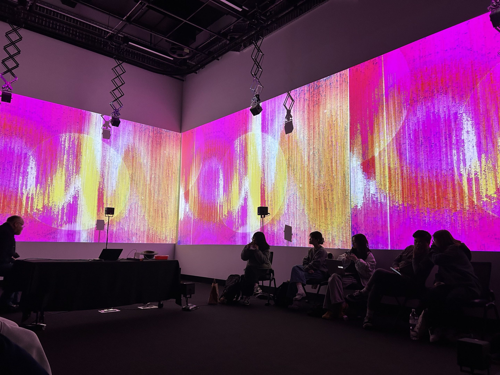
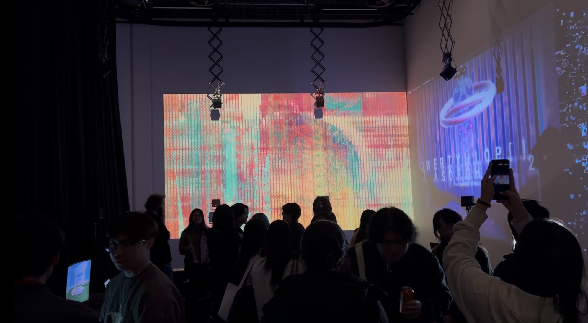
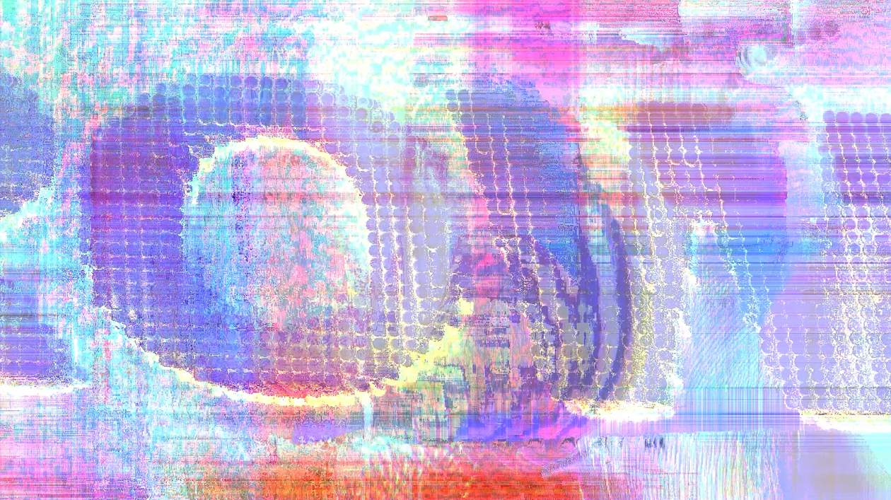

oneiricOS
oneiricOS is an experimental video work inspired by Hutton’s paradox. It was made by distorting real life footage in TouchDesigner and then layering and merging them together in After Effects while questioning what happens when real life and digital worlds begin to merge into each other.



